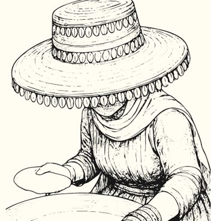
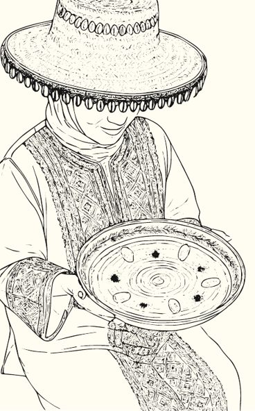
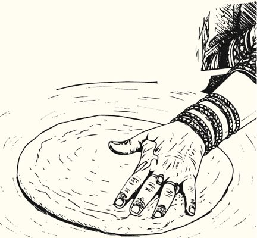

نخلّي العريكة ضيافة كل بيت سعودي وخليجي، زي ما القهوة العربي في كل مجلس.

الأساس اللي كل بوست وكل فيديو لازم يرجع له.
رضيف هو أصل العريكة الجنوبية، بخلطة جاهزة تخلّي أي بيت يقدّمها لضيوفه بنفس طعم بيوت الجنوب، حتى لو أول مرة يسويها.
خلطة بن قبطيه، وصفة بيت جنوبي حقيقي ووراها شيف وعائلة، مش منتج مصنع.
"اخلط، اطبخ، قدّم". الخلطة جاهزة والحاروقة وكيس العجن يشيلوا عنك الخبرة.
العريكة واجب ضيافة. بنبيع لحظة المجلس والضيف قبل ما نبيع كيس طحين.
الاسم رضيف (بالضاد). اللوجو مرسوم بحرف الظاء، فالناس هتدوّر بالطريقتين. في كل كابشن وبايو نكتب "رضيف" ونضيف الهاشتاق #رظيف مرة في البايو أو أول تعليق، عشان أي حد يدوّر بالشكل اللي شافه على الكيس يلاقينا.
تحليل عام لحساب تيك توك @ratheef.sa والمتجر، وإزاي نحل كل مشكلة.
المحتوى الموجود فيه دليل قوي (لوحة إعلانية في الشارع، شحنة وصلت إيطاليا، نقطة بيع في ملعقة)، بس متقدّم كتوثيق للحظة من غير هوك ولا قصة ولا حد بيحكي، فما بيجيبش متابعين. مش هنعدّل على الشغل اللي نازل. هنحلل الغلط فيه ونعمل الصح في المحتوى الجديد.
| المحور | التقييم | الوضع الحالي | الصح في شغلنا |
|---|---|---|---|
| البروفايل والبايو | ضعيف | البايو "طحين عريكة فاخر"، والطلب برقم تليفون من غير رابط للمتجر. مفيش ذكر للشحن ولا للجنوب. صورة البروفايل لوجو مكتوب "رظيف" والاسم "رضيف". | نحوّل الحساب لحساب أعمال ونضيف رابط صفحة المنتجات، ونكتب البايو الجديد (القسم 05). |
| نوع المحتوى | ضعيف | أغلب المحتوى ورا الكواليس ودليل (شحن، طلبات، لوحة، نقطة بيع). مفيش تعريف بالعريكة ولا طريقة تحضير ولا قصة البراند. | توزيع ثابت على خمس محاور، وأكبرهم المطبخ والحكاية (القسم 06). |
| شكل الفيديو | متوسط | فيه حركة وصوت، بس الفيديو ماشي كتصوير توثيقي من غير سكريبت ولا ترتيب. مفيش حد بيحكي أو بيشرح، والنص المكتوب هو اللي شايل الرسالة كلها. | سكريبت لكل فيديو (هوك، قصة، دعوة)، ووش بيحكي، والأولوية لبن قبطيه. |
| الهوية البصرية | ضعيف | النصوص كل مرة بستايل شكل (صندوق أصفر، صندوق أحمر، أبيض بإطار). مفيش خط ولا ألوان الهوية، والحساب مش باين إنه لبراند واحد. | قالب ثابت بخط وألوان رضيف، والنص في نفس المكان كل مرة. |
| الهوك والدعوة | ضعيف | الفيديوهات بتبدأ من غير هوك وبتخلص من غير خطوة للمشاهد (تابع، احفظ، اطلب). | هوك في أول ثانيتين، ودعوة واضحة في الآخر. |
| الظهور في البحث | متوسط | فيه كلام عن العريكة في بعض النصوص، بس مش ثابت، ومفيش هاشتاقات أو كلمات بحث مقصودة. | كلمة "عريكة" تتقال وتتكتب في كل فيديو، و3–5 هاشتاقات ثابتة. |
| التفاعل | ضعيف | 577 لايك على الحساب كله مقابل 294 متابع، يعني أقل من لايكين لكل متابع. الحساب ما بيتابعش حد (0 Following) ومفيش تفاعل ظاهر مع مجتمع الأكل والجنوب. | أسئلة في الكومنت، ورد يومي، وتفاعل مع حسابات الأكل الجنوبي والضيافة. |
| نقاط القوة | جيد | فيه حقائق حقيقية تبني ثقة: لوحة إعلانية في الشارع، شحن لإيطاليا، نقطة بيع في خميس مشيط، وطلبات بالكمية. ولقطات الطبق الجاهز حلوة. | نحوّل الحقائق دي لقصص جديدة بالشكل الصح، ونصوّر الطبق بالستايل الجنوبي. |
التحليل من صفحة الحساب الظاهرة. أرقام المشاهدات لكل فيديو ومعدل النشر محتاجين دخول على الحساب (Analytics) بعد استلام الصلاحيات.
| الغلط المتكرر في القديم | القاعدة في شغلنا |
|---|---|
| مفيش هوك، والفيديو بيبدأ بلقطة ساكتة. | هوك مكتوب ومسموع في أول ثانيتين. |
| تصوير توثيقي من غير سكريبت ولا قصة. | سكريبت مكتوب لكل فيديو قبل التصوير: هوك، قصة قصيرة، دعوة. |
| مفيش حد بيتكلم للكاميرا ويحكي. | وش بيحكي في أغلب الفيديوهات، والأولوية لبن قبطيه. |
| المنتج مش ظاهر أو بيبان متأخر. | الكيس أو الطبق يبان في أول 3 ثواني. |
| نص صغير، وخطوطه وألوانه بتتغير كل مرة. | نص كبير بخط وألوان الهوية، في نفس المكان كل مرة. |
| ما فيهوش كلمة "عريكة" ولا شرح. | كلمة "عريكة" تتقال وتتكتب في كل فيديو عشان البحث. |
| مفيش دعوة للطلب أو للمتابعة. | كل فيديو ينتهي بخطوة: تابع، احفظ، أو اطلب من البايو. |
| المشكلة | الحل |
|---|---|
| المبيعات كانت جاية من سناب الوالد (Mom_q7)، ولما وقف الدفع من هناك وقفت المبيعات. | نبني جمهور خاص بحساب رضيف، ونطلّع الوالد (الشيف بن قبطيه) كوجه البراند في سلسلة ثابتة. نستفيد من جمهوره من غير ما نعتمد عليه. |
| ناس كتير برا الجنوب مش عارفين يعني إيه عريكة أصلًا. | محتوى تعريفي قصير ومتكرر: "وش هي العريكة؟"، "من وين جت؟"، "تنأكل مع إيه؟". ده بيفتح السوق كله مش الجنوبيين بس. |
| أكبر عائق للشراء: "ما أعرف أسويها". | فيديو تحضير (من الكيس للصحن في 30 ثانية) + كاروسيل للأخطاء الشائعة وكاروسيل لكيس العجن. ده أكتر محتوى بيتحفظ (Saves). |
| الفيديوهات من غير هوك ولا سكريبت، والنص صغير وألوانه مختلفة كل مرة. | قالب ثابت: هوك مكتوب في أول ثانيتين، خط وألوان الهوية، فويس أوفر بلهجة جنوبية خفيفة، ونهاية فيها "الرابط في البايو". |
| الاسم مكتوب بطريقتين (رضيف / رظيف). | نثبّت "رضيف" في كل مكان ونغطي "رظيف" في البحث (شوف ملاحظة البراند). |
| مفيش إنستجرام. | نطلقه بخطة إطلاق جاهزة (القسم 05) يبقى هو بيت البراند والكتالوج والثقة. |
| المتجر: البانرات صور من غير نص، وفيه رسالة "غير موجود" ظاهرة، ومفيش روابط سوشيال غير واتساب. | رابط البايو يودّي لصفحة المنتجات مباشرة مش للرئيسية، ونبلّغ فريق المتجر يصلّحوا الرسالة ويضيفوا روابط تيك توك وإنستجرام. |
السعودية والخليج، من 20 سنة وطالع. أربع شخصيات بتغطي السوق.
من أبها أو خميس مشيط أو الباحة، ساكن في الرياض أو جدة أو الشرقية. العريكة بالنسبة له ريحة بيت أمه.
اللي يحركه: الحنين والفخر. المحتوى: قصص الجنوب، شتاء أبها، "طعم البيت وصلك".
من 25 لـ45 سنة، بتحب تقدّم حاجة مختلفة وأصيلة للضيوف من غير تعقيد.
اللي يحركه: "أبغى أبيّض وجهي قدام الضيوف". المحتوى: طريقة التحضير، التقديم، أفكار للعزايم.
شباب في المدن الكبيرة، بيتابعوا الأكل الشعبي والتجارب والتريندات.
اللي يحركه: التجربة الجديدة والمشاركة. المحتوى: ردود فعل أول تذوق، تحديات، مقارنات.
في الكويت والإمارات وقطر، أو أي حد بيدوّر على هدية تراثية للشتاء ورمضان.
اللي يحركه: شكل التغليف والقصة. المحتوى: الكيس في الشنطة المطبوعة، "هدية من الجنوب"، الشحن للخليج.
زي مضيّف جنوبي كريم بيستقبلك في بيته: دافي وفخور ومن غير تكلّف.
تيك توك يجيب ناس جديدة، وإنستجرام يقنعهم ويحوّلهم للمتجر.
الوصول والانتشار والبحث.
بيت البراند والثقة والكتالوج.
دي أول 9 قطع من خطة نوفمبر (القسم 07)، والرقم هو ترتيب النشر، فأحدث بوست بيبان فوق. الأحمر ريلز، والأسود كاروسيل، والكريمي صور، عشان الشبكة تبان بألوان الهوية.
15 قطعة في الشهر (12 بوست + 3 فيديوهات) موزّعة على خمس محاور.
التحضير خطوة بخطوة، الحاروقة، كيس العجن، أخطاء شائعة، لقطات ASMR من فوق. هدفه نكسر حاجز "ما أعرف أسويها".
بن قبطيه والخلطة، أصل العريكة، شتاء أبها، العرضة والقط العسيري. فيديوهات AI بالرسومات الموجودة في الهوية + لقطات حقيقية.
العريكة في المجلس جنب الدلة، العزايم، فطور الجمعة، السحور. بنبيع اللحظة مش المنتج.
أول تذوق، ردود فعل، فيديوهات العملاء (UGC)، تصويت وأسئلة في الكومنت. ده أسرع محور بيجيب متابعين.
تجهيز الطلبات، الشحن لمدن ودول، نقاط البيع، اللوحة الإعلانية. بيطمّن اللي متردد يشتري أونلاين.
نوفمبر: 12 بوست + 3 فيديوهات حسب العقد. كل قطعة عليها ترشيح: ترويج لهدف متابعين، أو تفاعل، أو أورجانيك.
| الأسبوع | القطعة | المحور | الفكرة والهوك | المنصات | الترويج |
|---|---|---|---|---|---|
| 1 | بوست 1 · صورة | حكاية | رضيف وصل إنستجرام: صورة البطل مع "مرحبا الساع" | إنستجرام | أورجانيك |
| 1 | فيديو 1 · ريل | حكاية | وش هي العريكة؟ هوك: "لو ما تعرف العريكة… فاتك نص كرم الجنوب". AI بالرسومات + لقطة الطبق | تيك توك + ريلز | ترويج · متابعين |
| 1 | بوست 2 · كاروسيل | حكاية | حكاية بن قبطيه والخلطة من بيت جنوبي لبيتك | إنستجرام + Photo Mode | ترويج · متابعين |
| 1 | بوست 3 · صورة | ثقة | لقطة البطل: الكيس على مصطبة حجر والجدار العسيري وراه | إنستجرام | أورجانيك |
| 2 | بوست 4 · كاروسيل | مطبخ | دليل العريكة خطوة بخطوة. "احفظ البوست، بتحتاجه في أول عزيمة" | إنستجرام + Photo Mode | ترويج · تفاعل |
| 2 | بوست 5 · تصميم | تجربة الناس | "عسل ولا تمر ولا سمن؟ قول في الكومنت" | إنستجرام + Photo Mode | ترويج · تفاعل |
| 2 | بوست 6 · صورة | ضيافة | صحن الضيافة: التقديم مع العسل والتمر والسمن | إنستجرام | أورجانيك |
| 3 | فيديو 2 · ريل | مطبخ | من الكيس للصحن في 30 ثانية. هوك: "طحين + موية + نار… وشوف النتيجة" | تيك توك + ريلز | ترويج · تفاعل |
| 3 | بوست 7 · صورة | ضيافة | العريكة في المجلس جنب الدلة: "واجب الضيف" | إنستجرام | أورجانيك |
| 3 | بوست 8 · كاروسيل | مطبخ | 3 أخطاء تخرب العريكة: "لو عريكتك تطلع ناشفة…" | إنستجرام + Photo Mode | أورجانيك |
| 3 | بوست 9 · كاروسيل | ثقة | من أبها لإيطاليا والخليج: خريطة الأماكن اللي وصلتها رضيف بتصميم الهوية | إنستجرام + Photo Mode | أورجانيك |
| 4 | فيديو 3 · ريل | تجربة الناس | أول تذوق: "أول مرة يذوق العريكة… شوف وجهه" | تيك توك + ريلز | ترويج · متابعين |
| 4 | بوست 10 · صورة | مطبخ | كيس العجن الحراري: "يدك ما عاد تحترق وأنت تعرك" | إنستجرام | أورجانيك |
| 4 | بوست 11 · تصميم | تجربة الناس | آراء العملاء: رسائل وتقييمات حقيقية بتصميم الهوية | إنستجرام | أورجانيك |
| 4 | بوست 12 · صورة | ضيافة | "أول برد في الجنوب = عريكة": طبق ساخن وبخار | إنستجرام | أورجانيك |
فيه 6 قطع مرشحة للترويج، ومنهم بنروّج 3–4 بس في الشهر حسب أداء أول 24–48 ساعة. لو العميل عايز بوست لعرض الوايت فرايداي (27 نوفمبر)، بيتحسب من الـ12 وبياخد مكان بوست 12. وأي فيديو يصوّره العميل بنفسه وينزل زي ما هو يبقى إضافي خارج الـ3 فيديوهات.
ترويج من جوه التطبيق (Promote / Boost) لبوستات أثبتت نفسها. ده منفصل عن الحملات الإعلانية.
اقتراح مبدئي للميزانية: من 75 لـ150 ر.س لكل بوست، بحد أقصى 3–4 قطع في الشهر من المرشحين في خطة الشهر. القرار النهائي للعميل وفريق الإعلانات.
ضروري
طلب أساسي من العميل. كل صورة منتج لازم يبان إنها من الجنوب من غير ما نقول.
الصور تكمّل الرسومات الموجودة في الهوية: الطفشة، الحنا والأساور، الصحن الخشب، وبيوت الحجر. اللي في الرسمة الأبيض والأسود نصوّره حقيقي وبالألوان.



الألوان تيجي من الإكسسوارات والخلفية، مش من فلتر.
لقطة البطل: كيس الطحين على مصطبة حجر، والجدار العسيري وراه. ضوء شمس صباحي من الجنب.
فلات لاي المنتجات الـ3: الطحين + الحاروقة + كيس العجن على قماش مطرّز، حواليهم عسل وسمن وتمر.
الصحن من فوق: العريكة مكوّرة والحاروقة في النص، وإيد بحنا بتقطع منها.
صبّة الحاروقة: لقطة قريبة سلو موشن (فيديو + صورة).
العرك: الإيدين جوه كيس العجن الحراري والبخار طالع.
المجلس: الصحن جنب الدلة والفناجيل، ورجال بالثوب في الخلفية ("تقدمها الرجال للرجال").
الطبيعة: الكيس على سور حجري وضباب السودة أو أبها ورا.
الهدية: الكيس طالع من شنطة رضيف المطبوعة، وكارت البراند جنبه.
متجر أبو حور (abohoor.com)، من متجره وحساباته على إنستجرام وإكس وسناب، حسب لقطات الشاشة يوم 2 نوفمبر 2026.
| اللي شايفينه في محتواه | المعنى بالنسبة لنا |
|---|---|
| قوته الحقيقية في سناب المالك (2 مليون متابع). صاحب المتجر بيظهر بوشه في فيديوهات سيلفي بشماغ، من شنطة العربية وفي المجلس والبر. | نفس نموذج رضيف بالظبط (والد العميل على سناب)، بس على نطاق أكبر بكتير. ما ننافسوش في حجم الجمهور. ننافس في التخصص والقصة، وننقل جمهور الوالد لحساب البراند. |
| إنستجرام فيه نوعين ما بيركبوش على بعض: فيديوهات خام للمالك، وتصميمات عسل ذهبي وأسود فاخرة شبه أي براند عسل. | هوية بصرية واحدة لرضيف: جنوبية عسيرية في كل بوست وفيديو. أي حد يشوف البوست يعرف إنه رضيف من غير اللوجو. |
| العريكة عنده عرض مش قصة: "اشتري 10 كيلو بر عريكة وكيلو سمن واحصل على كيلو شوكة مجانًا"، و"بكج العريكة فقط بـ318". | محدش بيحكي حكاية العريكة. رضيف ياخد المساحة دي بالكامل: الأصل، والتحضير، والضيافة. |
| كل التصميمات عروض: "اشتري 2 كيلو واحصل على ربع مجانًا"، "عرض الصيف". المتجر نفسه عليه خصومات من 11٪ لـ44٪. | نبيع بالقيمة والتجربة. المحتوى الأورجانيك من غير خصومات، والعروض للمواسم بس. |
| البراند مربوط بشخص المالك، وسنابه فيه حياته الشخصية والأكل والإعلانات ورخصة عقارية. | بن قبطيه يظهر كشيف وصاحب وصفة جوه محتوى رضيف، والحساب يفضل للبراند. كده البراند يعيش من غير ما يعتمد على حساب شخص. |
| بيبيع بر خام 10 كيلو بـ139 ر.س. التزام كبير ومحتاج خبرة خلط. | خلطة جاهزة + حاروقة + كيس عجن. رسالتنا "ما تحتاج تكون جنوبي ولا خبير"، وده جمهور هو مش بيكلمه. |
| مفيش تيك توك في روابطه، وإكس واقف من 30 أغسطس. | فرصة نمتلك كلمة "عريكة" في بحث تيك توك قبل ما يدخل. |
| بايو إنستجرام فيه "مسجل في هيئة الغذاء والدواء" ورقم تواصل. | نقطة ثقة لازم نعمل زيها: لو رضيف مسجل في الهيئة أو في "معروف" أو "موثوق"، نكتبها في البايو. |
| منتجاته اللي بتنافسنا | السعر | قبل الخصم |
|---|---|---|
| بكج العريكة (10 ك بر عريكة + ك سمن + ك عسل شوكة) | 318 ر.س | 567 ر.س (-44٪) |
| بر سنابل حور، عريكة 10 كيلو | 139 ر.س | 189 ر.س (-27٪) |
| كيلو سمن بلدي | 179 ر.س | 199 ر.س |
الوش والبكج. فيديوهات المالك بوشه هي اللي بتبني الثقة عنده، فالأولوية عندنا فيديو بن قبطيه. والبكج فكرة ذكية، فنقترح على العميل "صحن الضيافة": طحين + حاروقة + كيس عجن في شنطة رضيف، كهدية للشتاء ورمضان.
العميل قال إن المنافس قلّد فكرة البراند. ردّنا على السوشيال ما يكونش هجوم. نثبّت إننا الأصل بالقصة والوجه والتخصص، وده بيبان لوحده. الأرقام من لقطات الشاشة، ونسب التفاعل والمشاهدات عنده محتاجة متابعة يدوية.
العريكة أكلة شتا، والعقد واقع في عز موسمها.
| إيقاع الشهر | الأحد | الثلاثاء | الخميس |
|---|---|---|---|
| الأسبوع 1 | بوست | فيديو + بوست | بوست |
| الأسبوع 2 | بوست | بوست | بوست |
| الأسبوع 3 | بوست | فيديو + بوست | بوست |
| الأسبوع 4 | بوست | بوست | فيديو + بوست |
12 بوست = 3 في الأسبوع. الـ3 فيديوهات تنزل على تيك توك وريلز في نفس اليوم. الستوري اليومي إعادة نشر من غير إنتاج زيادة.
أوقات النشر المبدئية بتوقيت السعودية: 1–3 الضهر و8–11 بالليل، والخميس بالليل أقوى وقت. نختبرها أول أسبوعين ونثبّت الأحسن.
3 لـ5 هاشتاقات في البوست. الأهم إن كلمة "عريكة" تتقال وتتكتب في الفيديو نفسه.
الحاجات اللي محتاجينها عشان نبدأ تنفيذ خطة نوفمبر.